:陌語症 Wordia
MengChih Chiang Solo Exhibition 2016
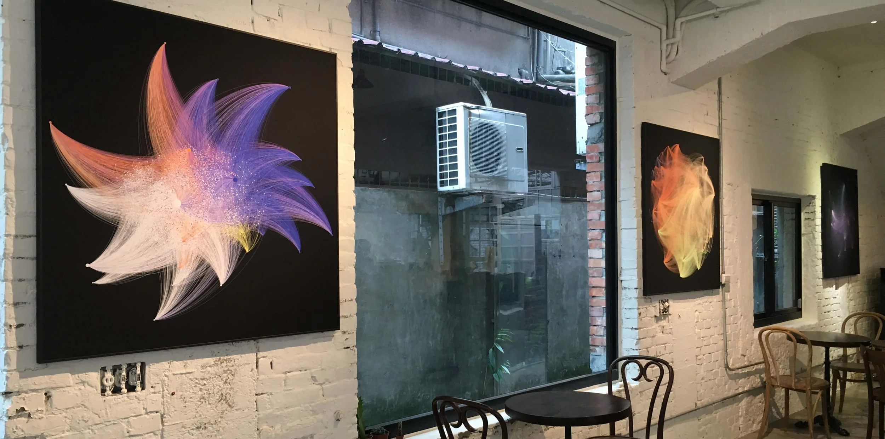
Why Side Projects
When I love something, I make it happen. Side projects are where I get to step outside the brief, follow my curiosity, and create things that genuinely move me. :陌語症 Wordia is one of those projects — an art exhibition I designed and curated not because I had to, but because I couldn't not.
"If I love something, I will do it — regardless of whether it's in my job description."
— Vicky Lu
About the Exhibition
:陌語症 Wordia — MengChih Chiang Solo Exhibition 2016
Taiwan-based artist MengChih Chiang returns to Taiwan for her first solo exhibition, presenting the internationally acclaimed :陌語症 Wordia series in its entirety.
Inspired by the process of language learning, :陌語症 Wordia collects data from over 20,000 English words. Through data visualization, the data transforms into thousands of dots and lines — vibrant in color, rich in depth and spatial dimension. Like nebulae in the cosmos, blurring and dazzling — these are the hazy yet vivid reading memories that exist within our minds.
Contributions
:陌語症 Wordia
：陌語症 Wordia — MengChih Chiang Solo Exhibition 2016
This creation takes "learning" as its inspiration — generating personalized data from over 20,000 words, reconnecting the texts we see, and giving language a new definition of interpretation. What do people pursue? Knowledge? Status? Or the angle from which society views you? The English-worship prevalent in Asian society is like a magnificent cosmic celebration — a spectacle of soulless shells. Can we find spiritual satisfaction by exchanging everything for it?
"Words are tokens, exchanging the value of thought in different worlds." — Language symbols have been weaponized from the very beginning to gain power. Those who master the dominant language are deemed noble; those who don't are deemed inferior. This distinction forgets the purest nature of language — the beauty of understanding consciousness, not a weapon to divide groups.
:陌語症 took a long time to gestate — uncovering a visual experience hidden within language. Through data visualization, the learning process of thousands of words transforms into thousands of dots and lines. Every line is an invisible connection that cannot be spoken; every dot is a familiar yet foreign phrase. Have the countless words we've encountered brought us closer to the wider world, or further from our native culture?
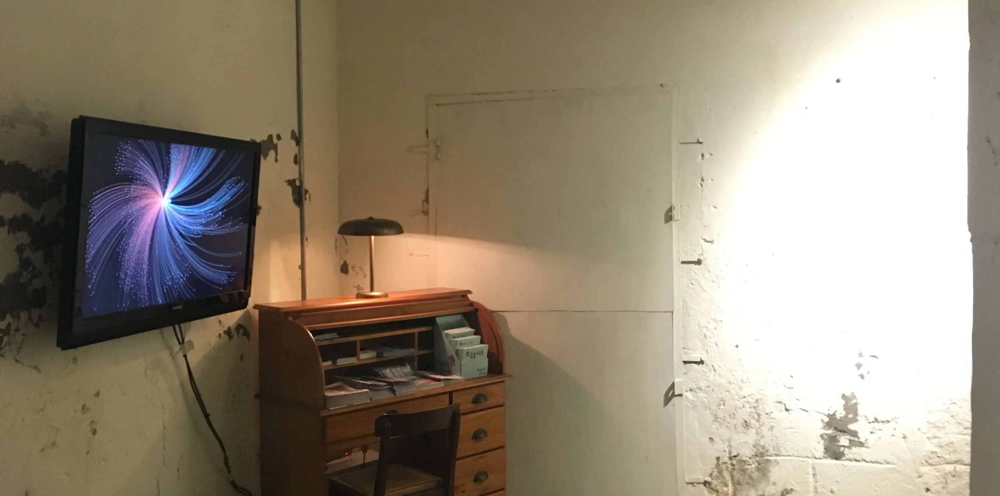
The exhibition is divided into four zones: 1. Creation Story 2. Video Introduction 3. Interactive Imagery 4. Print Works
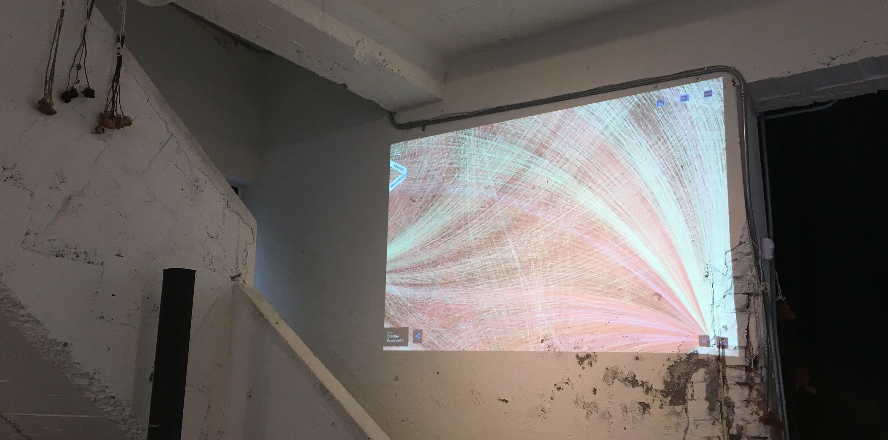
Interactive data visualization projected live onto the gallery wall.
Upon entering, visitors are greeted by large-format prints, followed by interactive projections on the walls. Behind the interactive wall is a video introduction to the artwork — arranged like a study room, where visitors can also read the 20,000-word article that served as the creation's data source. Through this spatial arrangement, one perspective deepens understanding through the artwork, another views the completed work through MengChih's eyes — visitors experience shifting states of mind from outside-in and inside-out.
:陌語症 Wordia Extended Events
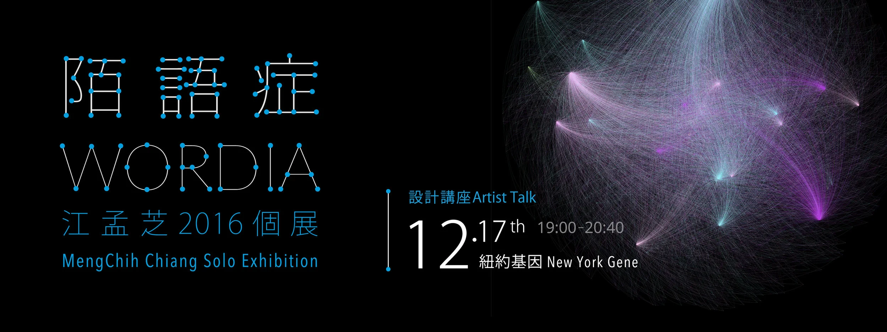
：陌語症 Wordia ｜ Design Talk：紐約基因 New York Gene
"What New York gives you is not just constant inspiration, but a constant parade of strange and extraordinary scenes." — E.B. White, Here is New York. In 2011, designer MengChih Chiang received the Ministry of Education scholarship and pursued her MFA in Computer Arts at the School of Visual Arts, New York. In this talk, she shares the New York "gene" — what transformed her as a creator, and how :陌語症 captures the invisible connections between herself and the city.
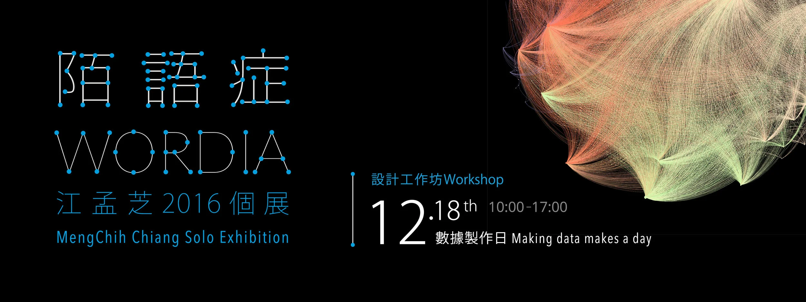
：陌語症 Wordia ｜ Design Workshop：數據製作日 Making Data Makes a Day
A photograph can capture a state of mind; a data visualization can read an entire life story. The first data-making workshop held in Taiwan — participants learn the origins and forms of big data, then create their own data aesthetics from scratch. In an age of information overload, deconstructing fragmented data is like piecing together a puzzle or brushing away noise in an archaeological dig. Through clever color and graphic design, raw information and soft, romantic design elements combine into something entirely new.
:陌語症 Wordia Design Work
Poster | Postcard | Invitation Card | Website | Venue Set-up
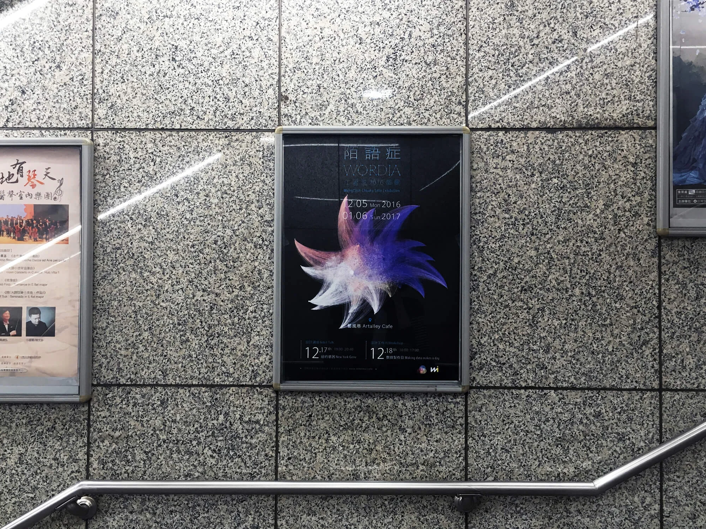
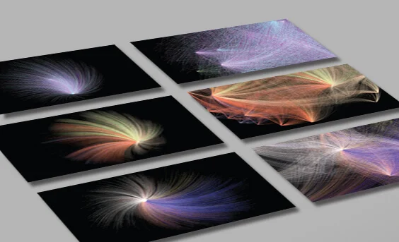
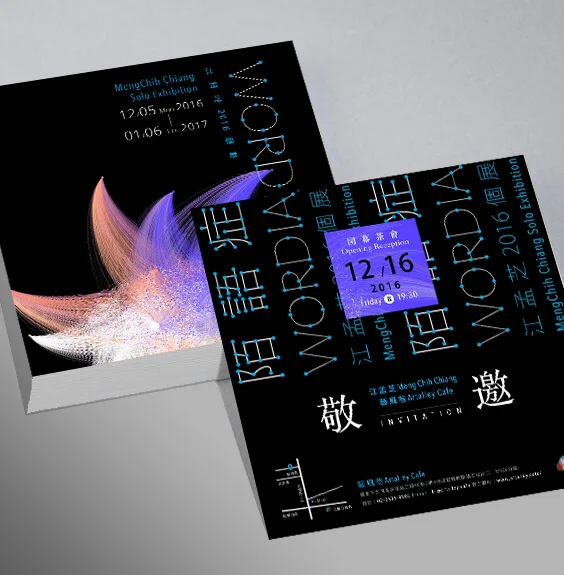
:陌語症 Wordia Event Highlights
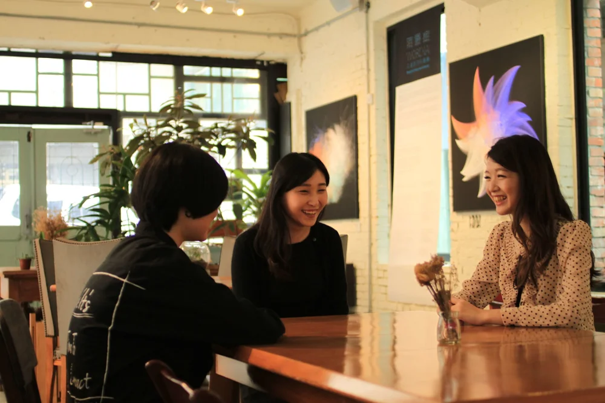
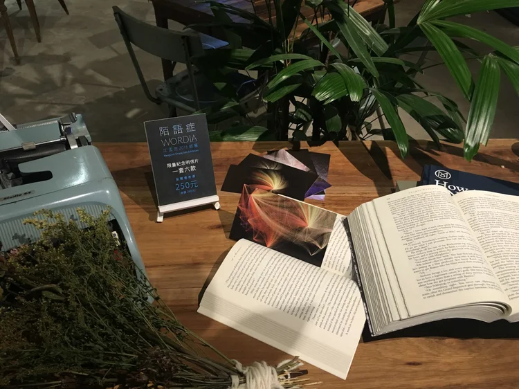
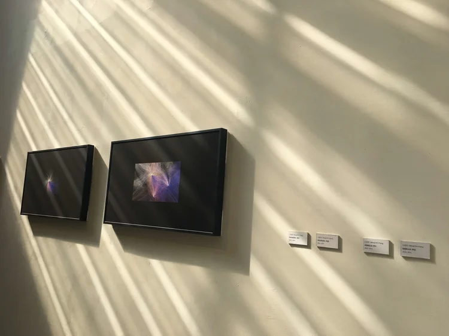
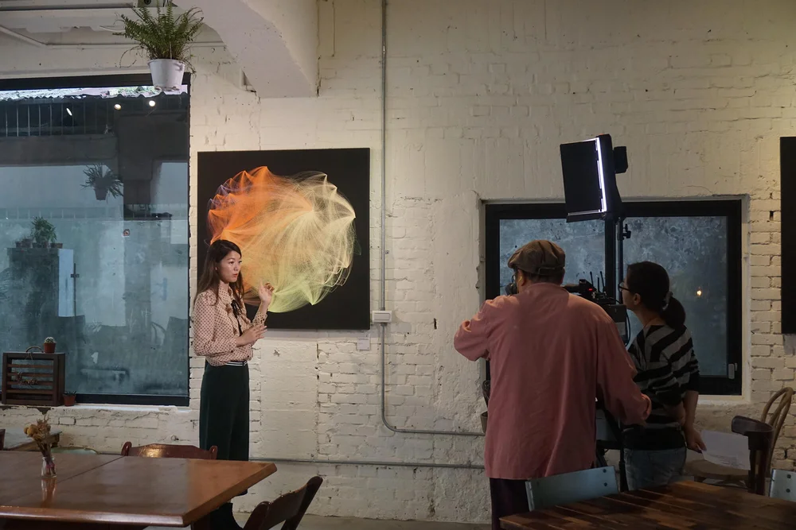
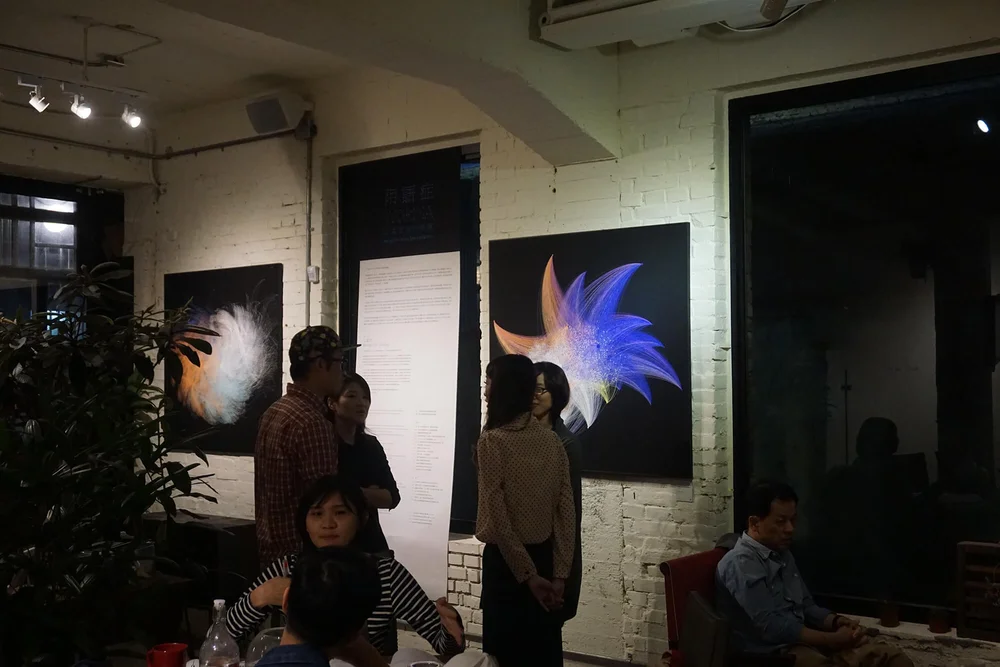
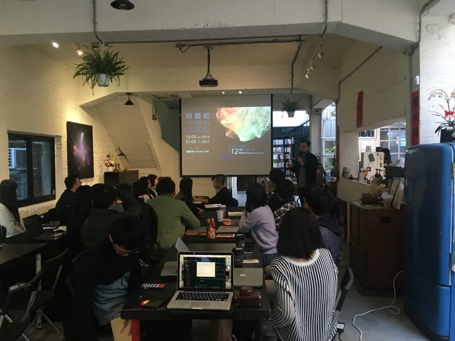
The exhibition attracted over 1,000 visitors. Both the design talk and the workshop were fully booked. :陌語症 also received media coverage from multiple outlets during the exhibition period.
Media Coverage
- 人間衛視《創藝多瑙河》— TV Interview
- 《非池中》— Print Media Feature
- HitFM《蔻蔻早餐》— Radio Interview
- 《今周刊》— Print Media Feature
- 《自由時報》— Lifestyle Section